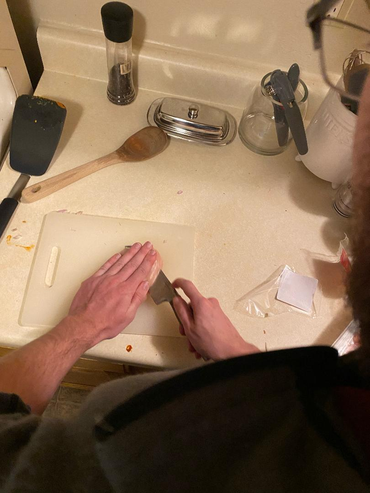
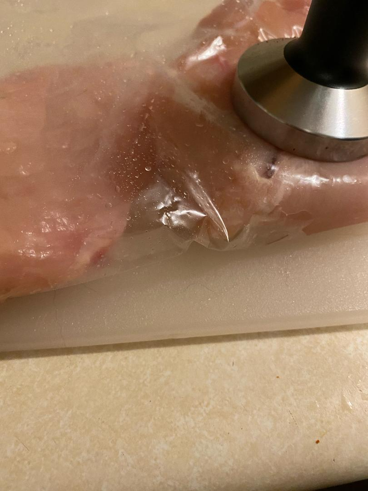
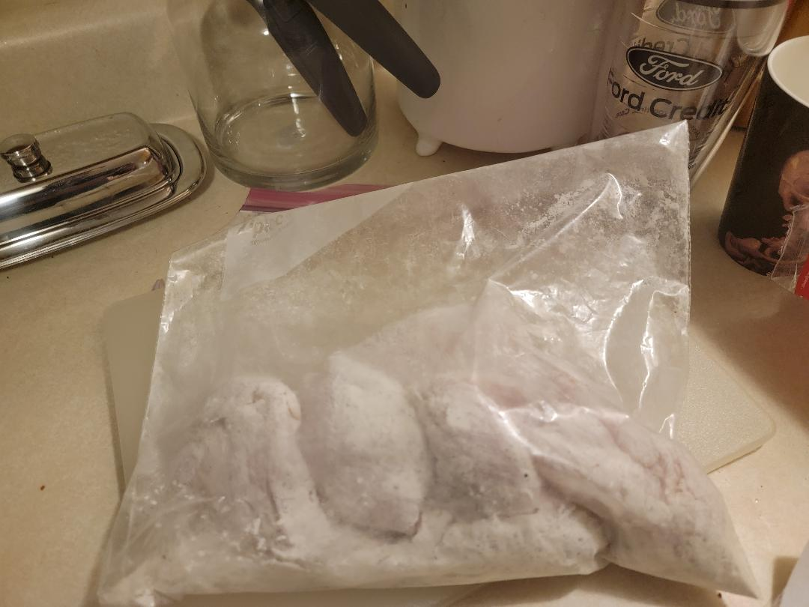
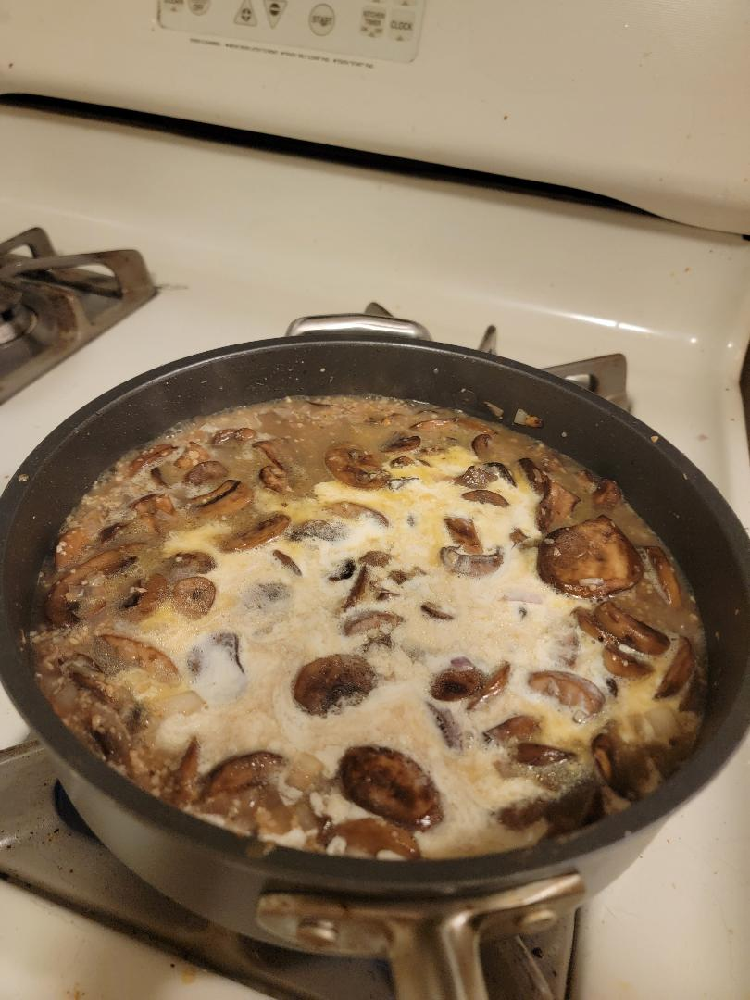
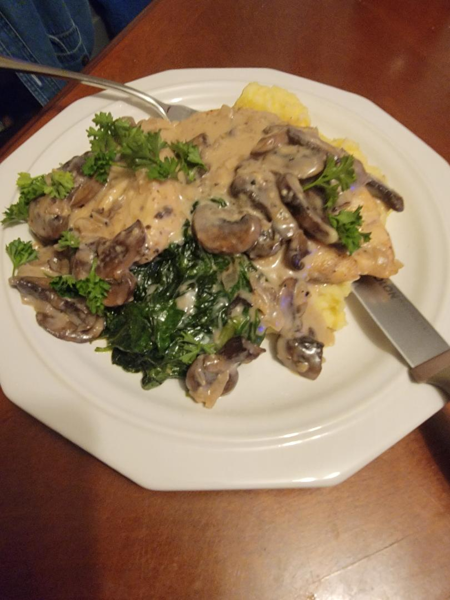
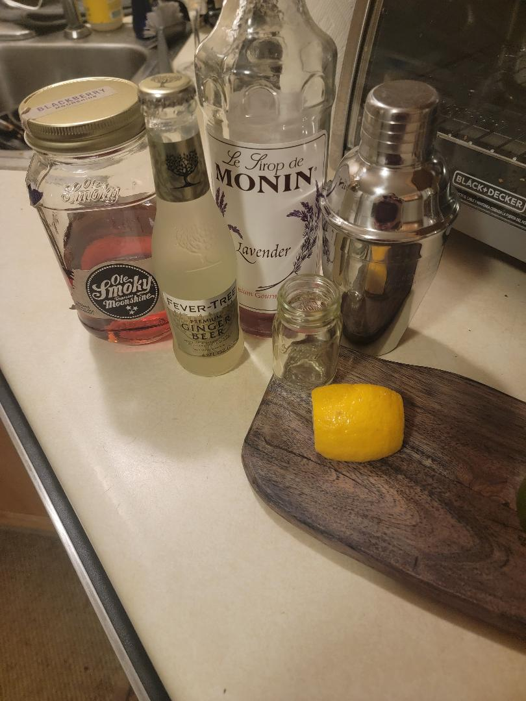
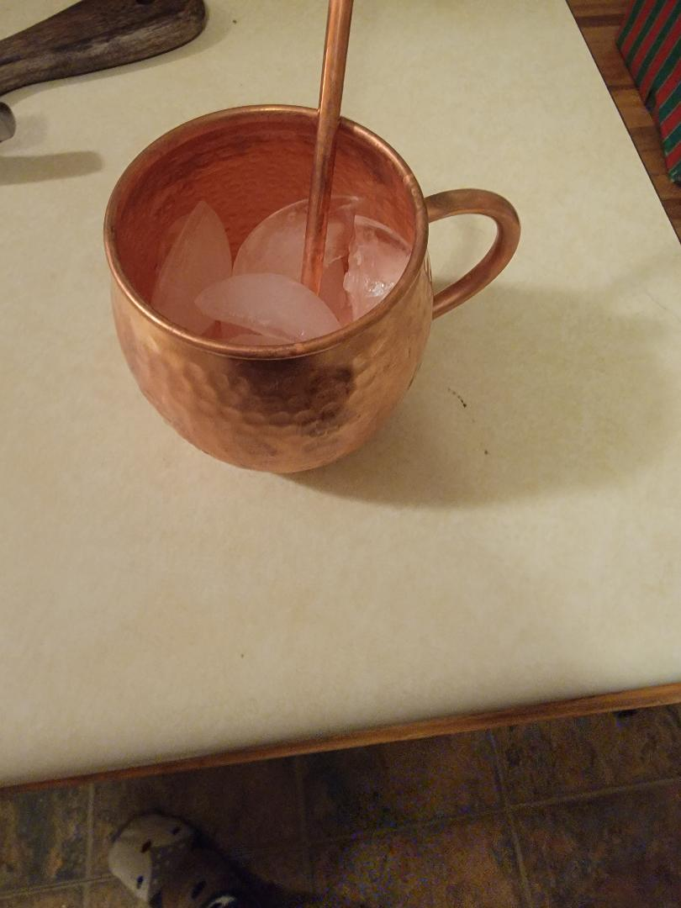
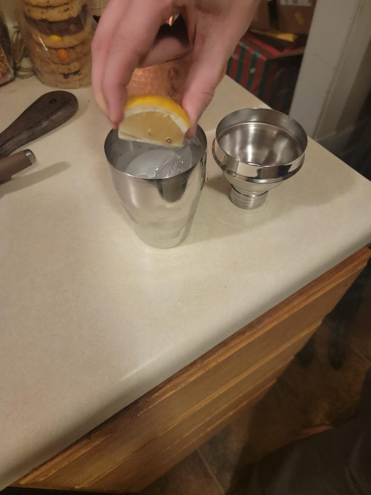
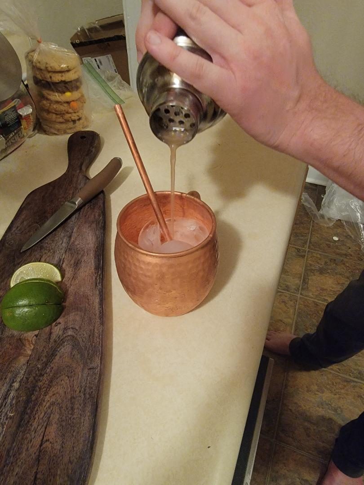
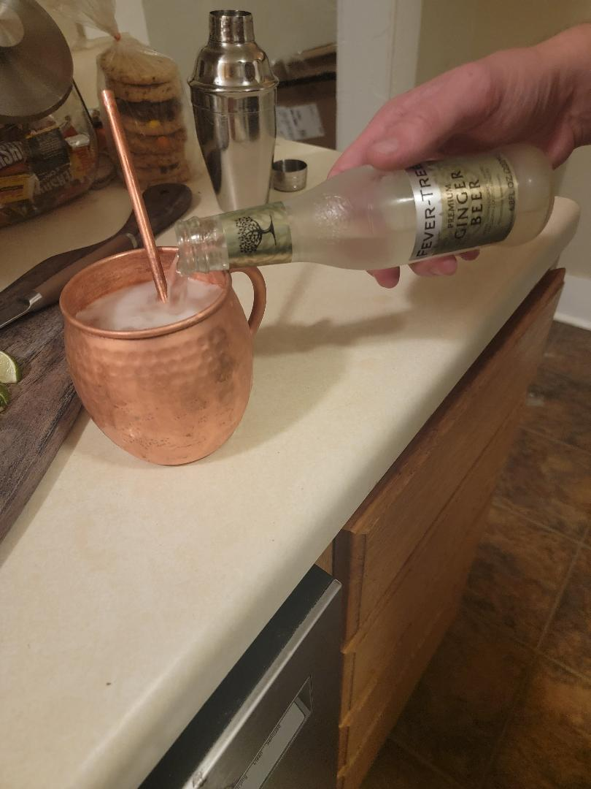

Recipe page
I have chosen two recipes to share on my page. The first is going to be a delicious chicken marsala recipe. I learned this recipe from my stepfather, Martin, and have added a few tips after the recipe. It is best served with pasta, rice, or mashed potatoes, and best paired with a dry red wine or whisky. I have also included the recipe for the "Midnight Mule." This is not recommended to be paired with your meal. Rather, it is a pleasant after dinner cocktail. This is a spin on the classic Moscow Mule which my significant other, Allison, and I came up with ourselves. The ingredient's name brand does not matter. I have included images to assist you. Enjoy!
Chicken Marsala Recipe
- 1-1 ½ lbs of boneless chicken breast
- 3 tbsp flour
- Salt: 2tbsp recommend
- Pepper:2 tbsp recommended
- 3 tbsp of butter
- 1 tbsp olive oil
- 8 oz pre sliced mushrooms (belle or button)
- 1 finely cut shallot
- 2 heaps minced garlic
- 2/3 cup chicken broth
- 2/3 cup Marsala Wine
- 2/3 cup heavy cream (recommend to purchase a half pint)
- 2 teaspoons thyme (recommend fresh)
- 2 tbsp parsley (Garnish/optional)
- Optional: Bourbon or a dry red wine
- 
Optional Slice (butterfly) chicken breasts
- 
Tenderize (roughly ¼ inch thick)
- 
Place flour, salt, Pepper, in Ziplock (recommend Gallon/freezer). Add all chicken to bag and shake thoroughly

Heat olive oil and 2 tbsp of butter in Larger NON-STICK skillet over med-high

Place flour dusted chicken in pan (shake extra flour off)

Cook for 6 minutes turning once

Transfer to plate and set aside. In the same pan add remaining butter and add mushrooms

Add Shallots, garlic, and ¼ teaspoon of salt. Cook 1-2 minutes
- 
Add broth, wine, heavy cream, thyme, and salt and pepper to taste. Recommend using a wood spoon for scrapping any browned mushrooms from bottom of pan. Bring liquid to a boil, reduce heat to medium

Continue to gently boil until sauce is reduced to ½

Add chicken back into sauce and reduce heat to low. Simmer until sauce thickens (2-3 minutes)
- 
Sprinkle with Parsley and serve!
- If you want your sauce to be a bit thicker, you can add 2 teaspoons of corn starch during the thickening process, at the risk of losing a little flavor. It is important to whisk corn starch thoroughly to create a thick sauce without clumps.
- You can also add a liquor to your sauce to give it an extra kick. It is recommended to use a dry red wine or whiskey.
- As said above, this dish is best served this pasta, rice, or mashed potatoes. I find that the mashed potatoes offer a great complement to the overall texture and taste of the sauce. There is also the added benefit of having already opened a heavy whipping cream. The remaining cream from a half pint container is just enough to add to your potatoes to make them nice and fluffy.
- You may have noticed a little extra green in our final product. This is a bit of spinach that is lightly sautéed and salted. You can add the spinach if you desire some vegetables with your marsala.
- The easiest step to miss in this process is adding thyme. If you forget that your marsala will be lacking in flavor. Much like in coding; sometimes missing a seemingly insignificant step can have disappointing results.
Midnight Mule

- 1 oz of Black Berry Moonshine
- ½ oz lavender syrup
- ¼ lemon
- Ginger beer
- Copper Mug (optional)
- Shaker - normally used for other drinks shaking our liquor and syrup together will be necessary
Chill mug (best served in copper mug but can be served out of any drinking cup)
Pour moonshine and lavender syrup into a shaker, ¾ filled with ice.

Squeeze lemon juice (do not worry about the pips)
Shake

Pour into mug with grate top still on shaker to contain ice and pips
Pour ginger beer
Garnish with a lemon and Enjoy!

**Concerning mule ingredients: If you are unable to find "Moanin syrup," look at your local kitchen supply store, there is bound to be a lavender syrup you can use there. Ginger beer is a non-acholic mixer. I would not recommend drinking it alone. I highly recommend finding the ginger beer that is best for you. Fever Tree is my personal favorite because of its tolerable carbonation and extra spice. That being said, this is a carbonated drink do not attempt to add shake. Similarly, there are other blackberry moonshine apart from 'Old Smokey.' Allison and I wish you the best of luck in making this drink your own!